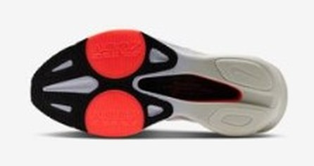
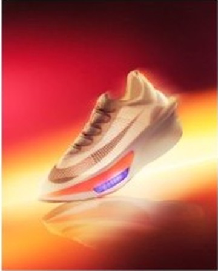

RACE｜レーシング
買うのは、30km以降の脚。
アルファフライ 4が売っているのは、30km以降の脚だ。ZoomX LTとAir Zoomの組み合わせで、筋力が落ちた局面でもストライドを前に運ぶ。¥39,600は4足で最も高いが、「最後の10kmで崩れる」悩みに最も直接答える靴でもある。
サブ3前後でフルマラソンの後半に落ちる人。フィットの失敗を避けたい人。
予算を抑えたい人。走行音が気になる人。


従来のZoomXより最大17%軽く、エネルギーリターンは約8%向上。これを上層に置き、下層の標準ZoomX、前足部のAirポッド、幅を広げたプレートで受ける。前作からの軽量化は約10g（約5%）。大きく作り変えたのではなく、前作の土台を熟成させたモデルだ。
初代や第2世代の弱点は、特有のぐらつきとタイトコーナーでの踏ん張りにくさだった。前足部のベースを広げてこれが大幅に解消された。安定性は「中〜高」。エンドルフィン プロ5には及ばないが、もはや上級者しか履けない靴ではない。
| アルファフライ 4 | アディオス プロ5 | エンドルフィン プロ5 | |
|---|---|---|---|
| 価格 | ¥39,600 | ¥29,700 | ¥37,400 |
| 重量 | 約188g（26.5cm） | 約177〜180g（27.0cm） | 206g（27.0cm） |
| 返りの質 | 強いスプリングバック | 俊敏で直線的 | 制御された自然な反発 |
| 終盤の強み | 推進アシスト | 軽さでピッチ維持 | フォーム崩れの防止 |
| 安定性 | 中〜高 | 中 | 極めて高い |
3足とも「後半に効く」と評されるが、効き方が違う。靴が運んでくれるアルファフライ、軽さでピッチを保つアディオス、崩れにくくするプロ5。自分の後半がどう崩れるかで選ぶとよい。ストライドが縮むタイプなら、この靴の設計と噛み合う。
Believe in the Runなど海外の実走レビューで一致している強みが、レース30km以降の脚残しと推進の維持だ。ソフトな接地の後、変形したフォームが即座に戻り、Airポッドが機械的に跳ね返す。筋力が落ちてもストライドが自動的に前へ運ばれる、という評価になっている。
フィットも評価が高い。柔軟なAtomknitが足に馴染み、レースを強く締めても甲が痛みにくい。標準サイズで合う人が多く、高価な靴で失敗しにくいのは大きい。
完全に本番用。距離を踏む靴ではない。ポイント練習はエンドルフィン スピード 6、ジョグはノヴァブラスト 6に分担させる。練習量が限られ、30km以降の脚づくりが足りないと感じる人ほど、この靴の設計が効く場面は多いだろう。ただし靴は練習不足を消してはくれない。崩れる距離を少し先へ延ばすものと考えるべきだ。
高い。音もする。それでも後半の失速が最大の課題なら、4足の中で最も狙いが合う。安さならアディオス、安定ならプロ5、終盤の推進ならこれ。
※本記事はメーカー公表値と国内外のレビューをもとにした分析です。発売直後のモデルのため、長期使用のデータはまだ揃っていません。